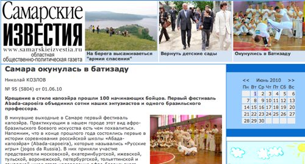

«Самара окунулась в батизаду», Самарские Известия №95 (5804)

Крещение в стиле капоэйра прошли 100 начинающих бойцов. Первый фестиваль Abada-capoeira объединил сотни наших энтузиастов и одного бразильского профессора.
В минувшие выходные в Самаре первый фестиваль капоэйра. Практикующим в нашем городе этот вид афро-бразильского боевого искусства есть чем похвалиться. Напомним, что в конце прошлого года состоялись первые в истории соревнования российской школы «Абада-капоэйра» (Abada-capoeira), которые назывались „Русские игры“ (jogos da Russia). В них приняли участие представители московской, екатеринбургской, ижевской, тульской, воронежской, петербургской, тольяттинской и самарской школ этого направления афро-бразильского искусства. На «Русских играх» самарская команда взяла сразу 17 (!) кубков из 30.
В нынешнем фестивале приняли участие не только самарские «капоэришта». В гости к ним приехали спортсмены из Армении, Австрии и далекой Бразилии, а также Москвы, Екатеринбурга, Ижевска, Димитровграда и Тольятти.
Мир капоэйра уникален. В нем причудливо сплелись культурные традиции черной Африки, колониальной, а затем и свободной Бразилии. Лично я до сих пор не могу понять, чего же в капоэйра все-таки больше: чисто боевого искусства, головокружительной акробатики и виртуозной хореографии или все-таки отвязной и веселой игры. Дело в том, что капоэйришта не сражаются — они играют. Бой в капоэйра так и называется — „жога“, что в переводе с португальского значит «игра».
Музыка в этом виде спорта играет огромную роль. Ритм, который отбивают специальные бубны и барабаны, а также ладоши спортсменов и песни, казалось бы, такие простые, но вместе с тем имеющие глубокий сакральный смысл, настраивают бойцов на схватку-игру, задают им ритм, а главное — позволяют сохранить веселую атмосферу на протяжении всего праздника.
В капоэйра, также как и в любом другом виде единоборств, спортсменов разделяют по уровню мастерства. В Абада-капоэйра, которое практикует большинство самарских спортсменов, 17 таких уровней. Каждому соответствует пояс (корда) определенного цвета. Цвет подбирается не случайно. Каждый символизирует то или иное качество, которое должно быть присуще спортсмену на этом уровне: терпение, скромность, целеустремленность, уверенность и мудрость.
Игра, проходившая в субботу, напомнила веселый карнавал. Фестиваль начался с персонального выступления, т.н. «градуадо» — обладателей синих поясов. Эти ребята продемонстрировали зрителям, что пределов возможностям человеческого организма нет. Облаченные в белые штаны и майки с логотипом фестиваля спортсмены выходили в роду (круг, в котором развивается действие) и обрушивали на потрясенных зрителей каскады невероятных кульбитов, мощных ударов, сальто. Добавьте к этому зажигательные бразильские ритмы — и вы поймете, что зрелище стоило того, чтобы в нем если не поучаствовать, то хотя бы полюбоваться им со стороны.
В рамках фестиваля прошла первая в истории Самары Batizado E Troca De Cordas (церемония посвящения и смены поясов). Почетным гостем стал Professor Sabia (в миру Junio Cesar Marques Da Costa). Ему 33 года. Как сообщил нам организатор мероприятия, руководитель самарской школы Абада-капоэйра Роман Ермолаев (он же Graduado Curinga), гость является уважаемым в мире капоэйра человеком.
- Professor Sabia достаточно долго занимается капоэйра, — сказал Роман. — Он очень много делает для развития и популяризации нашей школы. В настоящее время он живет в Брюсселе, где ведет взрослые и детские группы.
Кроме того, профессор устраивает батизаду в Европе. В России он уже третий раз, до этого Professor Sabia два раза был в Москве, и вот оказался в Самаре. Ассистировал бразильцу Алексей Найденов (Graduado Falcao). Этот человек один из первых начал заниматься Абада-капоэйра в России.
- Перед самой батизаду у нас были тренировки с бразильцем, которые длились с пятницы по воскресенье. Тренировок было много и все они были разными, — продолжает рассказ Роман Ермолаев. — Отработка движений, базовых и более сложных элементов, работа в парах. Уделялось внимание акробатической части. Кроме того, все учились играть на бразильских инструментах, петь. Даже португальский язык изучали. Professor Sabia очень много рассказывал об истории и философии капоэйра. Был урок по бразильской самбе и макулеле — танцу-схватке с оружием.
Батизаду для „капоэришта“ — очень важное событие. На этом празднике ученикам вручают первые пояса, то есть дают путевку в мир капоэйра. Кроме того, на батизаду можно получить более высокий уровень мастерства. Как сообщил нам Роман Ермолаев, в России батизаду проводится 1 раз в год в 3-х городах. В этом году она прошла в Москве, Самаре и Екатеринбурге.
Всего в церемонии приняло участие около 100 человек, из них 30 детей от 4 до 13 лет.
Свои первые пояса получили 30 взрослых и 30 детей. Самарские капоэйришта получили 45 поясов. Еще ряд спортсменов получили пояса более высоких уровней. Два ученика Романа получили оранжево-синие пояса (Corda laranja-Azul). Это очень неплохой уровень даже для родины капоэйра — Бразилии.
- Бразилец был доволен уровнем наших капоэйришта и вообще визитом в Самару, — говорит Роман. — После батизаду у всех ребят очень сильный заряд. Все очень довольны! Желание заниматься капоэйра стало еще больше. Не хотим останавливаться на этом и будем продолжать популяризировать этот вид спорта в Самаре и России. В частности, приглашать в Самару больше бразильцев. Устраивать в Самаре выступления, семинары и батизаду. Будем повышать свой уровень, чтобы больше понимать капоэйра и бразильскую культуру.
Факт
Помимо спортивного, существует и боевой раздел капоэйра. Здесь бойца учат противостоять нескольким противникам. Также в боевой капоэйра изучается искусство борьбы безоружного против вооруженного соперника, учат здесь и борьбе со связанными руками. В боевом разделе капоэйра культивируется также работа с холодным оружием — мачете. Кроме того, в качестве традиционного оружия используются также специальные небольшие клинки без рукоятки. Эти своеобразные «ножи» имеют изогнутое лезвие, которое боец удерживает пальцами ног. Предания гласят, что бандитов, вооруженных подобным образом, еще можно встретить в бразильских трущобах.
Справка:
Abada-capoeira в России является частью крупной международной организации, филиалы которой зарегистрированы более чем в 20 странах.
Всего в мире этим видом капоэйра занимается более 70 тыс. человек. В состав Аbada-capoeira России входит 11 городов.
Николай КОЗЛОВ
«Самарские известия» № 95 (5804) от 01.06.10